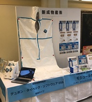
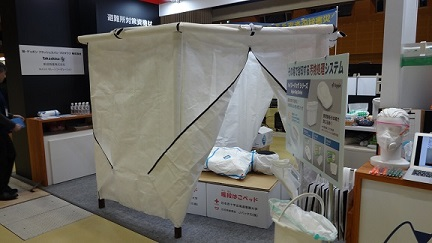

|
令和3年5月27日 |
役員人事に関するお知らせ 5月27日の臨時株主総会において飯島今朝則が取締役に就任しました。 |
|
令和3年5月1日 |
弊社取締役会長 五十嵐勤 逝去のお知らせ 弊社取締役会長 五十嵐勤 は4月29日 65歳にて永眠致しました。 ここに生前のご厚誼に深謝申し上げ、謹んでお知らせいたします。 |
|
令和2年8月28日 |
展示会出展のお知らせ 第14回 オフィス防災EXPO （幕張メッセ） 弊社は幕張メッセで開催される、オフィス防災EXPOに出展いたします。 展示内容 ・緊急避難用寝具 デュポン™タイベック®ソフトウェア ESB （エマージェンシーセイフティブランケット） ・モジュールセル 開催日 2020年（令和2年）年9月16日～18日 開場時間 10時～18時（最終日のみ17：00終了） 当日、会場で皆様にお会いできることを、社員一同楽しみに お待ち申し上げております！ 展示会ホームページ https://www.office-expo.jp/ja-jp/about/bousai.html |
|
令和2年1月24日 |
日本赤十字北海道看護大学 厳冬期災害演習2020 弊社取り扱いの 緊急避難用寝具 デュポン™タイベック®ソフトウェア ESB （エマージェンシーセイフティブランケット）が新規訓練項目として扱われます。 弊社スタッフも演習に参加し効果を体験してまいります。 展示会出展のお知らせ 第24回 震災対策技術展（パシフィコ横浜） 弊社はパシフィコ横浜で開催される、震災対策技術展に出展いたします。 展示内容 緊急避難用寝具 デュポン™タイベック®ソフトウェア ESB （エマージェンシーセイフティブランケット） 開催日 2020年（令和2年）年2月6日～7日 開場時間 10時～17時 当日、会場で皆様にお会いできることを、社員一同楽しみに お待ち申し上げております！ 展示会ホームページ https://www.shinsaiexpo.com/yokohama/ |
|
令和元年9月12日 |
展示会出展のお知らせ 展示会名称 危機管理産業展 2019 - RISCON TOKYO - 開催日 2019年10月2日～10月4日 開場時間 10時～17時 場所 東京ビッグサイト 青海展示棟 〒135-0064 東京都江東区青海１丁目２−３３ 展示内容 緊急避難用寝具 デュポン™タイベック®ソフトウェア ESB （エマージェンシーセイフティブランケット） 災害避難所用 間仕切りセット モジュールセル 展示会リンク http://www.kikikanri.biz/riscon.html 当日、会場で皆様にお会いできることを、社員一同楽しみに お待ち申し上げております！ |
|
令和元年9月5日～6日 |
一般社団法人 日本災害看護学会 第21回年次大会に出展致しました。 御多忙の中、弊社ブースにお立ちより頂き、誠にありがとうございます。 大変盛況のうちに執り行うことが出来ましたことを、弊社スタッフ一同心より 御礼申し上げます。  展示内容 緊急避難用寝具 デュポン™タイベック®ソフトウェア ESB （エマージェンシーセイフティブランケット） |
|
令和元年7月10日 |
展示会出展のお知らせ 展示会名称 埼玉県防災機器展示会 主催 埼玉県 共催 埼玉県防災士会 開催日 2019年7月10日 開場時間 12時～16時 場所 埼玉県県民健康センター ２階大ホールほか 埼玉県さいたま市浦和区仲町３－５－１ 展示内容 緊急避難用寝具 デュポン™タイベック®ソフトウェア ESB （エマージェンシーセイフティブランケット） 災害避難所用 間仕切りセット モジュールセル 展示会リンク https://www.pref.saitama.lg.jp/a0001/news/page/2019/0618-02.html 当日、会場で皆様にお会いできることを、社員一同楽しみに お待ち申し上げております！ |
|
平成31年3月18日～20日 |
第24回 日本災害医学会総会・学術集会に 旭・デュポン フラッシュスパン プロダクツ株式会社様と共同出展を致しました。 御多忙の中、弊社ブースにお立ちより頂き、誠にありがとうございます。 大変盛況のうちに執り行うことが出来ましたことを、弊社スタッフ一同心より 御礼申し上げます。 展示内容 緊急避難用寝具 デュポン™タイベック®ソフトウェア ESB （エマージェンシーセイフティブランケット） 災害避難所用 間仕切りセット モジュールセル  |
平成31年1月25日 |
展示会出展（2019年2月7～8日）のお知らせ 第23回 震災対策技術展（パシフィコ横浜） 新成物産株式会社はパシフィコ横浜で開催される、震災対策技術展に 旭・デュポン フラッシュスパン プロダクツ株式会社様と共同出展いたします。 展示内容 緊急避難用寝具 デュポン™タイベック®ソフトウェア ESB （エマージェンシーセイフティブランケット） 災害避難所用 間仕切りセット モジュールセル 開催期間 2019（平成31）年2月7日～8日 開場時間 10時～17時 弊社位置 小間番号 713 当日、会場で皆様にお会いできることを、社員一同楽しみに お待ち申し上げております！ 展示会ホームページ https://www.shinsaiexpo.com/yokohama/ |
平成30年10月10日～12日 |
危機管理産業展（RISCON TOKYO）2018 の 旭・デュポン フラッシュスパン プロダクツ株式会社ブースに 共同出展を致しました。 展示ブースでは、新商品「緊急避難用寝具」 別名：エマージェンシー セイフティ ブランケット（ESB） と 「災害避難所用間仕切りセット」別名：モジュールセル を展示しました。 大変盛況のうちに執り行うことが出来ましたことを心より御礼申し上げます。 |
平成30年09月13日 |
臨時株主総会を開催し、佐藤博史が新監査役に就任致しました。
|
|
平成30年08月21日 |
定時株主総会を開催し、同日の取締役会において、 代表取締役に岩松正剛が就任致しました。 |
平成30年06月25日 |
無担保社債（3億円)を発行しました。 |
|
平成29年12月12日 |
当社は、平成26年及び平成27年に東京都が発注した個人防護具について、 独占禁止法違反の疑いがあるとして、昨年10月12日に公正取引委員会による 立ち入り検査を受け、以降同委員会の調査に全面的に協力して参りましたが、 本日、同委員会より同法に基づく排除措置命令を受けることとなりましたので、 お知らせいたします。 お客様をはじめ関係者の皆様には多大なご心配、ご迷惑をおかけしたことを 深くお詫び申し上げます。 今後、同委員会の指示の下必要な措置を講ずるとともに、業務執行についても 見直しを行い、再発防止に取り組むことで信頼回復に努めて参ります。 |